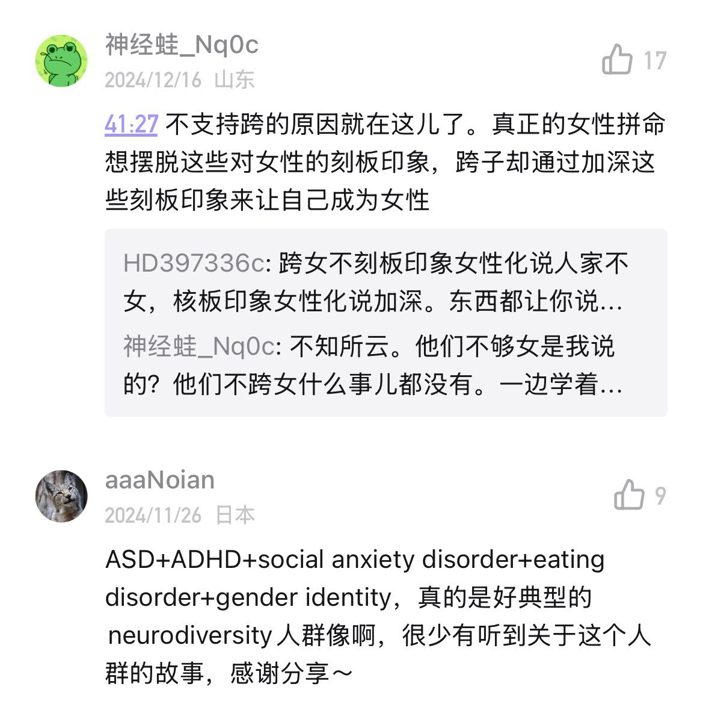
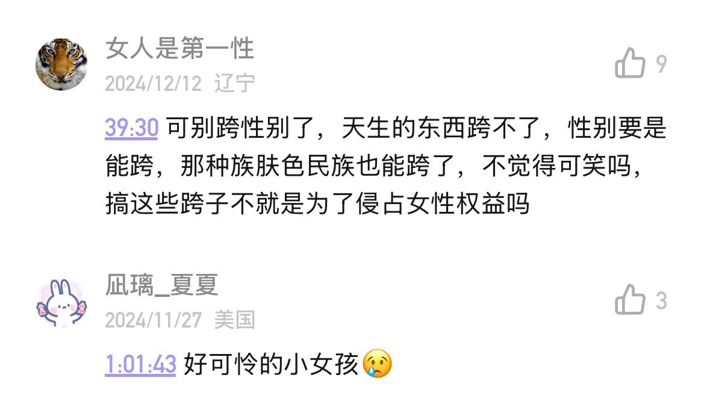

穗_我爱你🏳️⚧️💛🤍💜🖤
@Sui_aini
看到那些激动的女人说什么，跨女侵占女性权益，我就想笑，在老钟，女性到底有什么权益？？


花路探險記
@mukdengise
爹的，听小宇宙播客唯一一期讲英国跨性别女孩遇害案件的，主播全程用“女孩”和“女儿”，然后评论区还一堆这玩意。很多人对跨性别的印象完全是被一套固定的话术约束，很多都是自己想象来的。反正越来越对我的播客没信心了，如果被揭露是跨很难不被网暴 https://t.co/MJccjtAPwu